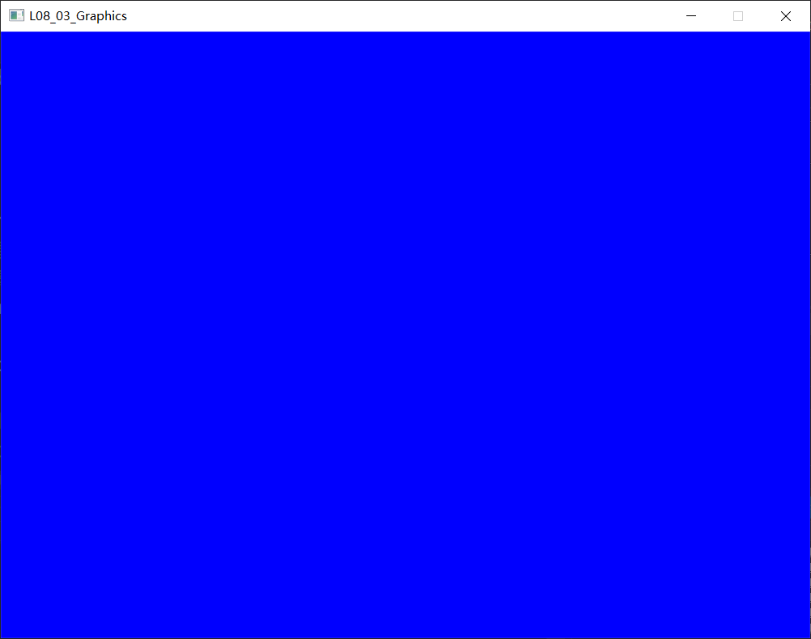
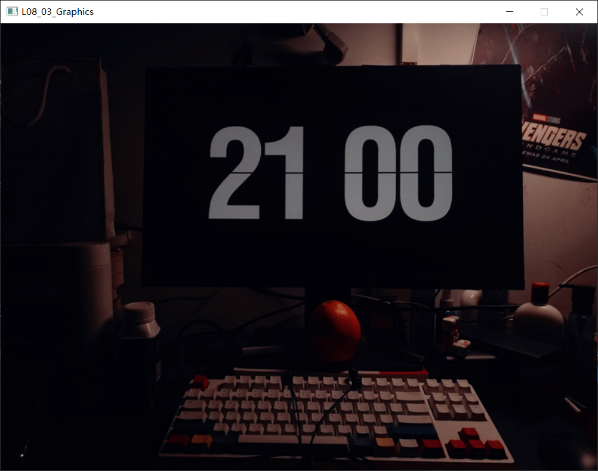

#include<stdio.h> #include<graphics.h> #include<conio.h> /* BMP头文件54字节的结构体声明 使用typedef()为struct BitMapHeader结构体定义别名：BIT_MAP_HEADER */ typedefstructBitMapHeader { long Size; // 文件大小 short Reserved1; // 保留字，不考虑 short Reserved2; // 保留字，同上 long OffBits; // 实际位图数据的偏移字节数，即前三个部分长度之和 }BIT_MAP_HEADER;
/* BMP信息头，也是一个结构体，其定义了BMP图片的具体参数信息 使用typedef()为struct BitMapInfo结构体定义别名：BIT_MAP_INFO */ typedefstructBitMapInfo { long Size; // 指定此结构体的长度，为40 long Width; // 位图宽 long Height; // 位图高 short Planes; // 平面数，为1 short BitCount; // 采用颜色位数，可以是1，2，4，8，16，24，新的可以是32 long Compression; // 压缩方式，可以是0，1，2，其中0表示不压缩 long SizeImage; // 实际位图数据占用的字节数 long XPelsPerMeter; // X方向分辨率 long YPelsPerMeter; // Y方向分辨率 long ClrUsed; // 使用的颜色数，如果为0，则表示默认值(2^颜色位数) long ClrImportant; // 重要颜色数，如果为0，则表示所有颜色都是重要的 }BIT_MAP_INFO;
initgraph(bmpInfo.Width, bmpInfo.Height); for (int x = 0; x <= bmpInfo.Width; x++) { for (int y = 0; y <= bmpInfo.Height; y++) { putpixel(x, y, RGB(0, 0, 255)); } }
程序运行结果： 
从fp读取对应像素点的RGB数值：
1 2 3 4 5 6 7 8 9 10 11 12 13 14 15 16
initgraph(bmpInfo.Width, bmpInfo.Height); // 位图每个像素点的RGB值占用3个字节 char data[3]; // 存储像素点的RGB值 for (int x = 0; x <= bmpInfo.Width; x++) { for (int y = 0; y <= bmpInfo.Height; y++) { // 从fp读取数据到data里 fread(data, 3, 1, fp); // 字符型数据可以转换成整型 int r = data[0]; int g = data[1]; int b = data[2]; putpixel(i, j, RGB(r, g, b)); } }
initgraph(bmpInfo.Width, bmpInfo.Height); // 位图每个像素点的RGB值占用3个字节 char data[3];// 存储像素点的RGB值 for (int y = bmpInfo.Height - 1; y >= 0; y--) { for (int x =0 ; x <= bmpInfo.Width -1; x++) { // 从fp读取数据到data里 fread(data, 3, 1, fp); // 字符型数据可以转换成整型 int r = data[0]; int g = data[1]; int b = data[2]; putpixel(i, j, RGB(r, g, b)); } }
程序运行结果： 
还可以修改for()循环里的条件：
1 2 3 4 5 6 7 8 9 10 11 12 13 14
for (int y = bmpInfo.Height - 1; y >= 0; y--) { // 修改这里的循环条件 for (int x =bmpInfo.Width -1 ; x >= 0; x--) { // 从fp读取数据到data里 fread(data, 3, 1, fp); // 字符型数据可以转换成整型 int r = data[0]; int g = data[1]; int b = data[2]; putpixel(i, j, RGB(r, g, b)); } }
#include<stdio.h> #include<graphics.h> #include<conio.h> /* BMP头文件54字节的结构体声明 使用typedef()为struct BitMapHeader结构体定义别名：BIT_MAP_HEADER */ typedefstructBitMapHeader { long Size; // 文件大小 short Reserved1; // 保留字，不考虑 short Reserved2; // 保留字，同上 long OffBits; // 实际位图数据的偏移字节数，即前三个部分长度之和 }BIT_MAP_HEADER;
/* BMP信息头，也是一个结构体，其定义了BMP图片的具体参数信息 使用typedef()为struct BitMapInfo结构体定义别名：BIT_MAP_INFO */ typedefstructBitMapInfo { long Size; // 指定此结构体的长度，为40 long Width; // 位图宽 long Height; // 位图高 short Planes; // 平面数，为1 short BitCount; // 采用颜色位数，可以是1，2，4，8，16，24，新的可以是32 long Compression; // 压缩方式，可以是0，1，2，其中0表示不压缩 long SizeImage; // 实际位图数据占用的字节数 long XPelsPerMeter; // X方向分辨率 long YPelsPerMeter; // Y方向分辨率 long ClrUsed; // 使用的颜色数，如果为0，则表示默认值(2^颜色位数) long ClrImportant; // 重要颜色数，如果为0，则表示所有颜色都是重要的 }BIT_MAP_INFO;